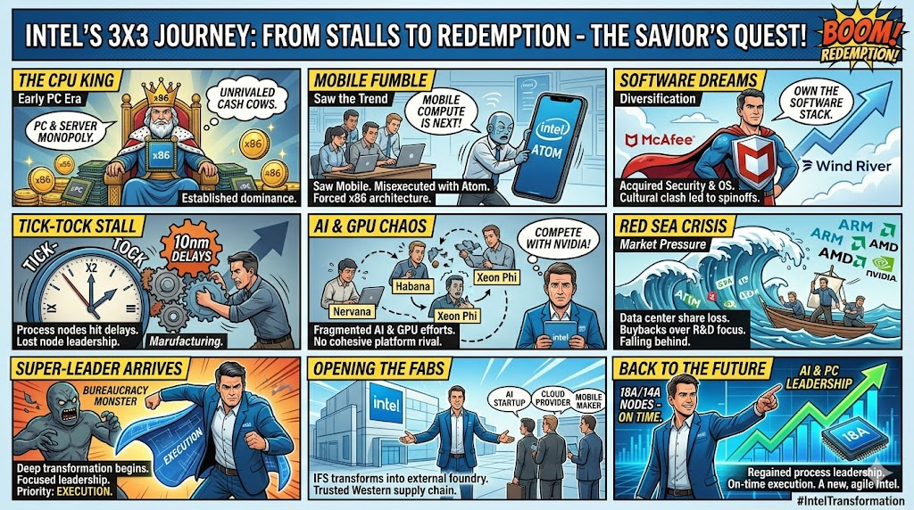

⚔️ Slaying the Bureaucracy
Massive restructuring slashed headcount to a lean core, stripping out the middle management and corporate bloat that historically killed innovation.
A TECH TRAGEDY IN 3 ACTS
The greatest myth in tech is that Intel was a “sleeping giant” that missed mobile, AI, and software. It saw every single trend coming — years in advance. It poured hundreds of billions into them. The downfall was an internal corporate immune system that systematically attacked and killed its own future.
“Vision without execution
is just hallucination.”
Intel bought a ticket to every major technological shift — then let its bureaucracy, arrogance, and obsession with x86 profit margins fumble the landing. Here's how.
Nine panels. One arc. The cash-cow king, the missed revolutions, the manufacturing collapse — and the savior's quest to rebuild on execution.

2000s–2020s — Intel kept buying a ticket to the future, only to let its own internal immune system reject it. Five fumbles, one pattern.
Intel owned the early ARM mobile market with XScale. Then it sold the future for better margins.
“Mobile compute is next!” — and they were right.
Intel saw parallel computing and AI early — then refused to let anything threaten the precious CPU.
“Compete with Nvidia!” — without a software ecosystem.
As value shifted to software and SaaS, Intel bought its way into the stack — and the cultures detonated.
“Own the software stack!” — then fail to integrate it.
Intel wanted to be the brains in every connected device. Overhead and quality control had other plans.
“The brains in everything!” — until the watches caught fire.
For decades “Tick-Tock” was flawless. Then hubris met physics — and physics won.
“Tick… tock… tick…” — and then the clock stopped.
By 2024 the internal bloat had nearly broken the company. The open-foundry bet was bleeding tens of billions. Intel was drowning in bureaucracy.
The new CEO realized instantly: Intel's problem was never engineering talent or vision — it was a systemic lack of accountability. Fresh off transforming Cadence Design Systems, Tan arrived as the executioner of Intel's bloat.
2026 & beyond — the focus shifts from protecting an x86 monopoly to out-executing everyone on the manufacturing floor.
“First time pass A0. B0, you keep your job.
— Lip-Bu Tan's A0 mandate, May 2026
Anything above that — you are fired.”
Massive restructuring slashed headcount to a lean core, stripping out the middle management and corporate bloat that historically killed innovation.
Designs must be production-ready on the very first physical tape-out. No more parades of buggy revisions — ruthless quality, enforced.
No longer protecting x86 at all costs. Intel openly courts fabless AI designers who need a trusted, Western supply chain.
With execution over ambition, 18A / 14A nodes are hitting targets — the foundation for clawing back the AI & data-center supply chain.
Intel saw the future before almost anyone else. From 2000 to 2024, its culture refused to execute on it. Now — stripped of its arrogance and led by a CEO demanding perfection — it is finally trying to just build it.